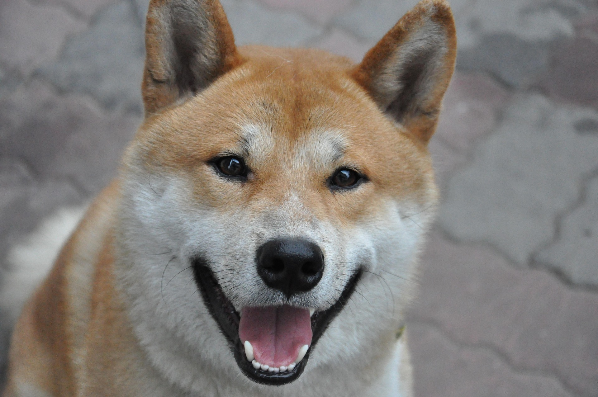
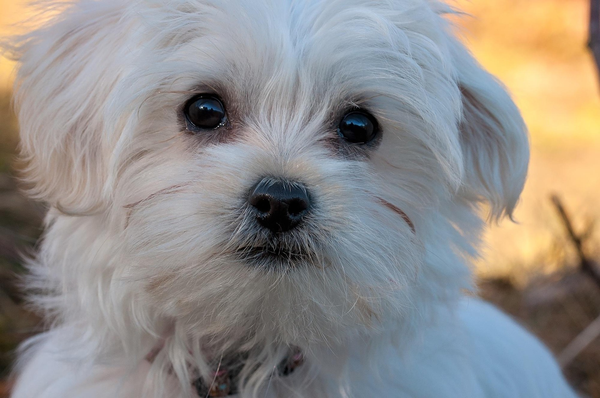
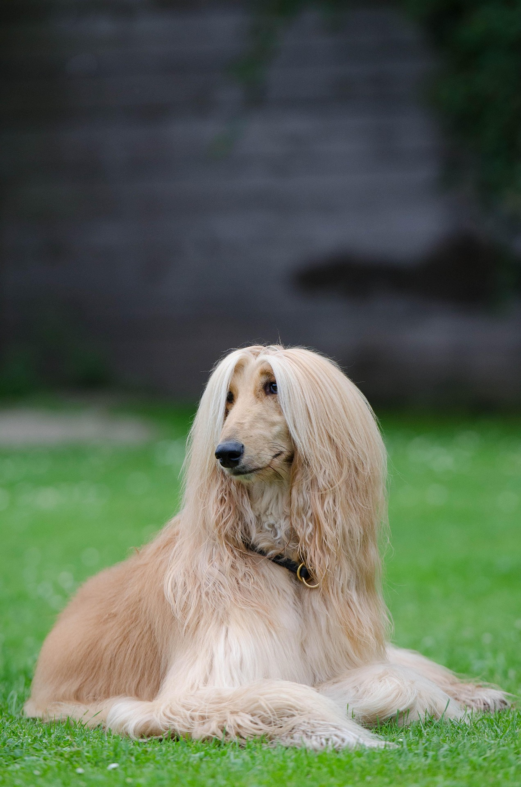

Shiba Inu
The Shiba Inu is a small to medium breed of dog that originated in Japan. They are known for their fox-like appearance, with a curled tail and a thick double coat. Shiba Inus are loyal and have a deep bond with their owners, but they can also be protective and wary of strangers. When a Shiba Inu sees a stranger, it may bark or growl to alert its owner. If you are going to adopt a Shiba Inu its better if you live alone and a big yard for them to run around. They are very active and need a lot of exercise.

Maltese
The Maltese is a small breed of dog that is known for its long, silky white coat. They are friendly, affectionate, and playful, making them great companions for families. Maltese are bred to have long fur coats to be in dog shows so they require regular grooming to keep their coat clean and free of tangles. Maltese are good with kids but also wary of strangers so they may bark or growl to alert their owners.

Afghan Hound
The Afghan Hound is a unique large breed of dog that is known for its long,flowing coat and elegant appearance. Its fur can cover its eyes and face so they require regular grooming to keep their coat clean and free of tangles. Afghan Hounds are independent and can be aloof with strangers, they make good family pets but they require a house with a big yard for them to run around in for exercise.